Professional Concrete Patio Installation in Calgary
Transform your backyard into an outdoor living paradise with a custom concrete patio from Virasat Concrete. Whether you're creating an entertainment area, dining space, or relaxation zone, our expert team delivers beautiful, durable concrete patios designed specifically for Calgary's climate and your lifestyle. We specialize in multiple patio styles and finishes to match your home's aesthetic and your outdoor living vision.
Types of Concrete Patio Pads
- Stamped Concrete Patios: Replicate the look of natural stone, slate, flagstone, or wood with decorative stamped patterns. Offers high-end aesthetics at a fraction of the cost of natural materials.
- Broom Finish Patios: Classic, clean look with excellent slip-resistance. The most cost-effective option, perfect for functional outdoor spaces and BBQ areas.
- Exposed Aggregate Patios: Decorative stone texture that adds visual interest and superior traction. Ideal for poolside areas and high-traffic zones.
- Colored Concrete Patios: Integral color mixed throughout the concrete for uniform, fade-resistant hues that complement your landscaping and home exterior.
- Smooth Trowel Finish: Clean, modern look ideal for contemporary homes. Can be polished or sealed for additional sheen.
- Custom Curved Designs: Organic, flowing shapes that integrate naturally with gardens, pools, and landscape features.
Why Choose Concrete for Your Calgary Patio?
- Freeze-Thaw Durability: Our patios use Calgary-grade concrete with air entrainment specifically engineered to withstand temperature fluctuations from -30°C winters to +30°C summers.
- Proper Drainage: We grade all patios with a minimum 2% slope away from your home to prevent water pooling and ice buildup.
- Reinforced Structure: Steel rebar grid and fiber mesh reinforcement prevent cracking and ensure long-term structural integrity.
- Low Maintenance: Unlike wood decks that require yearly staining or pavers that shift and grow weeds, concrete patios need only occasional cleaning and sealing every 2-3 years.
- Versatile Design: Unlimited shape options, sizes, finishes, colors, and patterns to create your perfect outdoor space.
- Cost-Effective: Less expensive than natural stone or pavers, with comparable aesthetics when using stamped or decorative finishes.
- Increases Home Value: Professional concrete patios can increase property value by 8-12% and significantly boost curb appeal.
Our Concrete Patio Projects in Calgary
 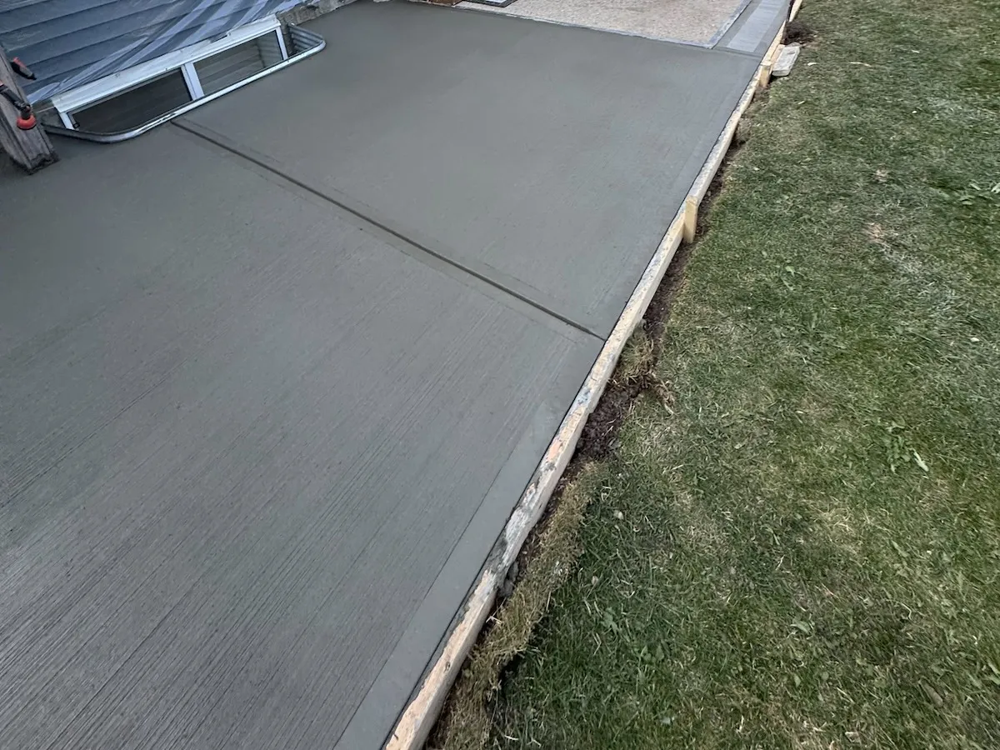
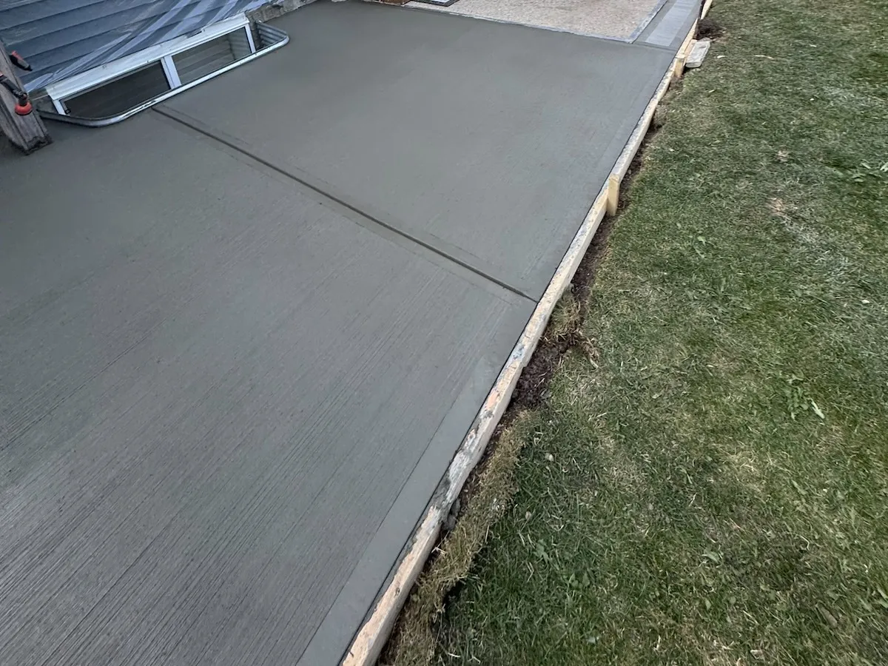
 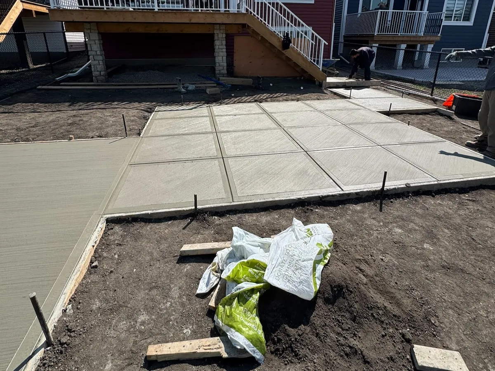
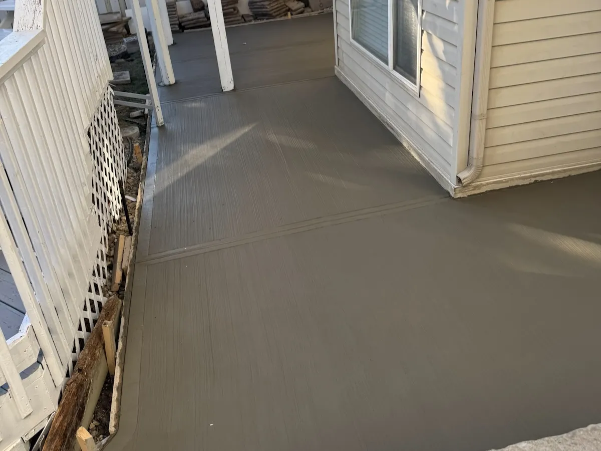
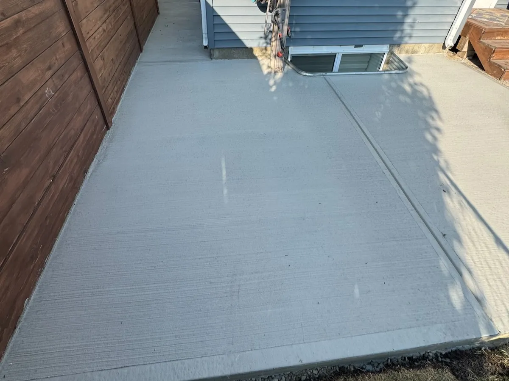
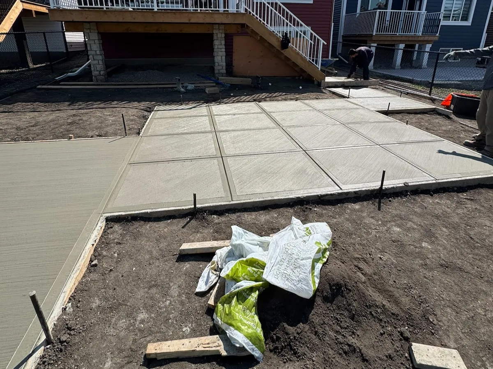
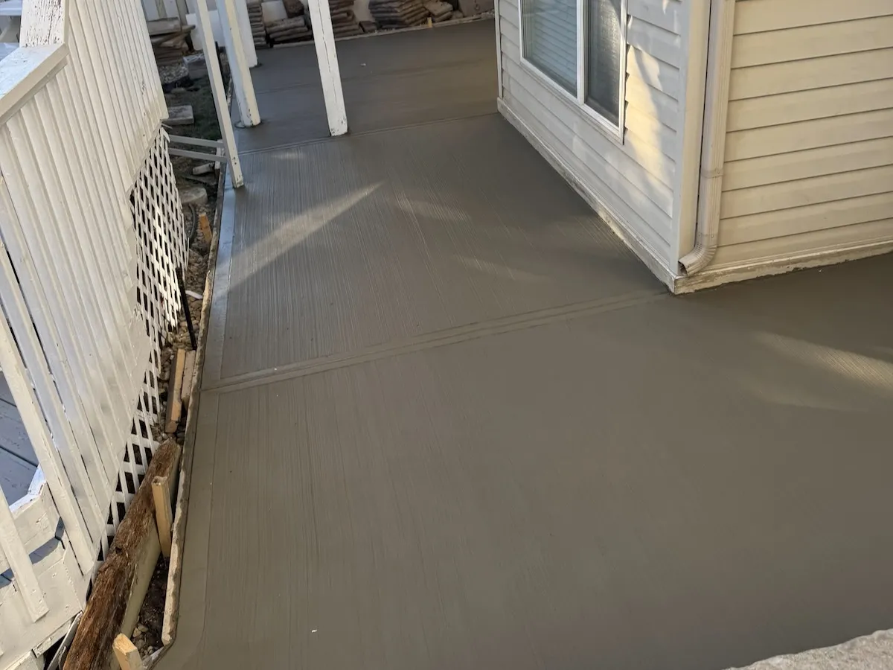
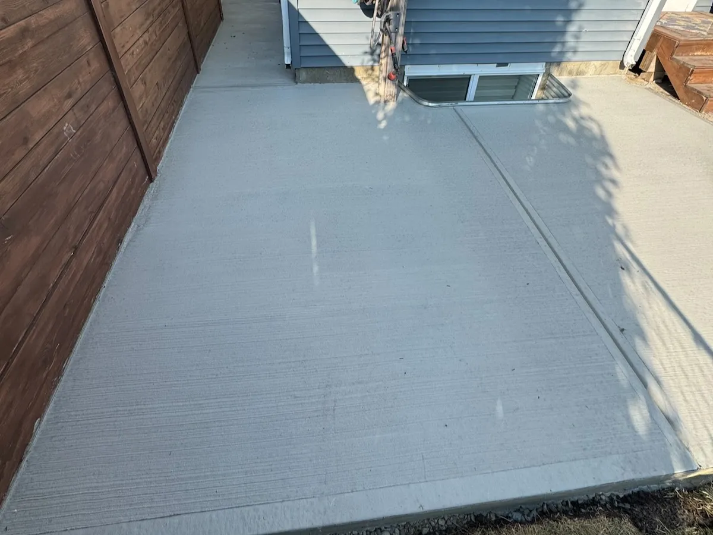
 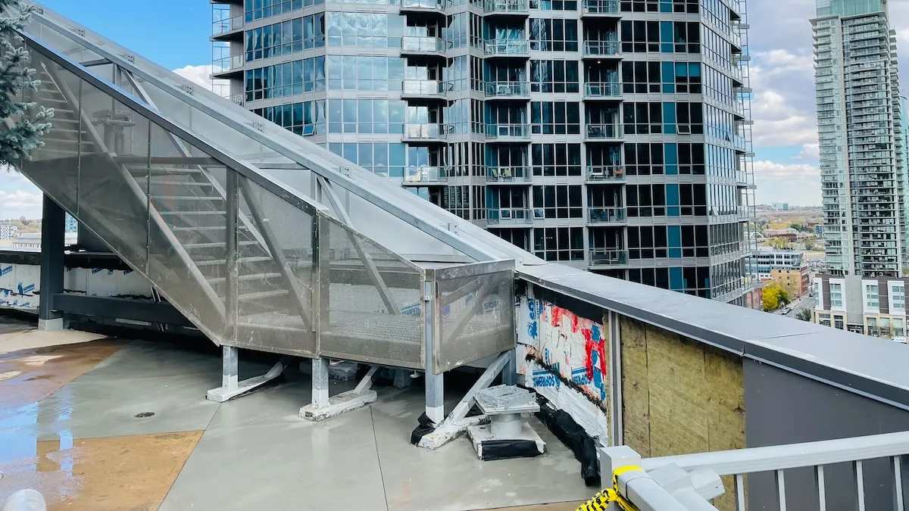
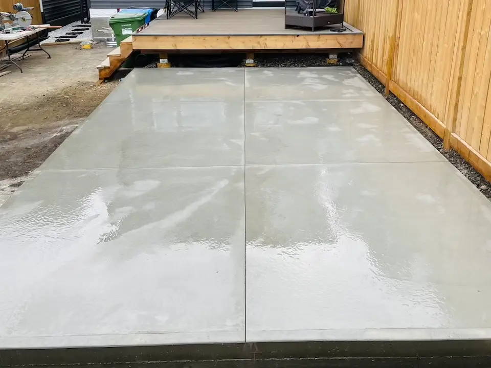
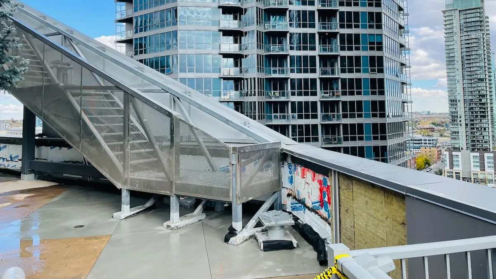
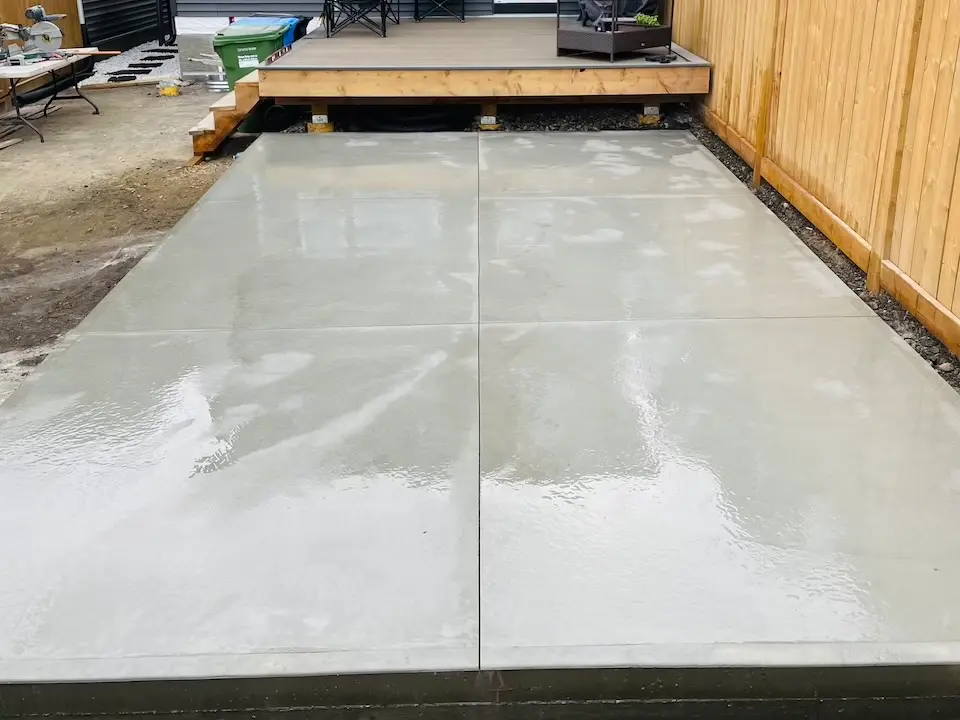
Our Patio Installation Process
- Design Consultation: We discuss your vision, measure the space, and recommend patio styles, sizes, and finishes that match your home and budget.
- Site Preparation: Excavate to proper depth (typically 6-8"), remove organic material, grade for drainage, and compact a granular base.
- Forming & Reinforcement: Install precise forms to shape your patio (including curves), add steel rebar grid and fiber mesh for crack prevention.
- Concrete Pour: Place high-quality, Calgary-grade concrete with proper slump and air entrainment, ensuring uniform thickness (typically 4-5").
- Finishing: Apply your chosen finish—stamping, broom texture, exposed aggregate, smooth trowel, or colored surface—with expert precision.
- Curing & Sealing: Protect the surface during 7-day cure period, then apply premium sealer for long-term protection against moisture, UV, and freeze-thaw damage.
What's Included
- Free on-site consultation and accurate measurements
- Excavation and hauling of removed material
- Compacted granular base (minimum 4")
- Precision forming for clean edges and custom shapes
- Steel rebar grid and fiber mesh reinforcement
- Calgary-grade concrete with proper air entrainment
- Your choice of finish: stamped, broom, exposed, colored, or smooth
- Proper slope for drainage (2% minimum away from structures)
- Control joints to minimize cracking
- Curing compound and premium penetrating sealer
- Complete site cleanup
- Warranty on workmanship
Frequently Asked Questions
Concrete patio costs in Calgary typically range from $10-20 per square foot depending on the finish. Basic broom finish patios cost $10-13/sq ft, stamped concrete patios run $15-20/sq ft, and exposed aggregate falls in between at $12-16/sq ft. For example, a 300 sq ft patio would cost approximately $3,000-$4,500 for broom finish or $4,500-$6,000 for stamped concrete. Final price depends on site access, excavation requirements, base preparation, thickness, reinforcement, and finish complexity. We provide free quotes with transparent, itemized pricing.
For Calgary's freeze-thaw climate, all our patio finishes perform well when properly installed with air-entrained concrete and sealer. Broom finish offers the best traction when wet or icy. Stamped concrete is highly durable and resists moisture when sealed regularly. Exposed aggregate provides excellent slip resistance and hides minor surface imperfections from freeze-thaw. We recommend avoiding smooth trowel finishes near pools or in shaded areas where ice can form. The most important factors are proper base preparation, adequate thickness (4-5"), steel reinforcement, and quality sealer reapplication every 2-3 years.
Standard residential concrete patios in Calgary should be 4 inches thick minimum. For patios that will support heavy items like hot tubs, outdoor kitchens, or fire features, we recommend 5-6 inches. The patio sits on a compacted granular base (minimum 4" of crushed limestone), includes steel rebar grid (#3 or #4 rebar at 18-24" spacing) and fiber mesh for crack prevention. Proper thickness combined with reinforcement ensures the patio can withstand Calgary's freeze-thaw cycles, soil movement, and typical furniture/traffic loads without cracking or settling.
Most residential concrete patio installations take 2-4 days from start to finish. Day 1: excavation, base preparation, and compaction (4-8 hours). Day 2: forming, rebar placement, and concrete pour with finishing (6-10 hours). Days 3-7: curing period with minimal activity. Day 7+: sealer application and final cleanup. Larger patios (500+ sq ft), complex shapes, difficult site access, or stamped patterns may add 1-2 days. You can walk on the patio after 24-48 hours for light traffic, but we recommend waiting 7 days before placing furniture and 28 days for full cure and maximum strength.
Yes, sealing is essential for Calgary concrete patios. A quality penetrating sealer protects against moisture intrusion (which causes freeze-thaw damage), prevents efflorescence (white powdery deposits), resists staining from leaves/BBQ grease, enhances color on stamped/colored concrete, and makes cleaning easier. We apply the first coat of premium sealer after the initial 7-day cure. Reapply sealer every 2-3 years or when water no longer beads on the surface. Use breathable penetrating sealers rather than topical coatings—they allow moisture vapor to escape while blocking liquid water, which is crucial for freeze-thaw durability in Calgary's climate.
Yes, we can install concrete patios during Calgary winters with proper cold-weather practices. When temperatures are between 0°C and 10°C, we use accelerated concrete mixes, insulated blankets, and heated enclosures to maintain proper curing temperatures. Concrete must stay above 5°C for the first 48 hours and above 0°C for 7 days to achieve full strength. Winter pours cost 10-20% more due to additional materials and labor. However, we do not pour when temperatures drop below -5°C or during active snowfall. The best seasons for patio installation are May-October when temperatures are consistently warm, curing is faster, and ground conditions are optimal.
Generally, you do NOT need a building permit for ground-level concrete patios in Calgary. Permits are typically required only for raised patios/decks over 24" high, patios attached to the house requiring structural connections, or patios that encroach on utility easements or setback requirements. However, you should still check with the City of Calgary's planning department if your patio is within 1 meter of property lines, near utility boxes, or in communities with specific covenant restrictions. We're familiar with Calgary bylaws and can advise during your consultation whether permits are needed for your specific project.
Concrete patio maintenance is minimal. Sweep regularly to remove debris and prevent staining. Wash with mild soap and water 1-2 times per year—avoid deicing salts as they can damage the surface (use sand instead). Reseal every 2-3 years with quality penetrating sealer to maintain moisture protection and color vibrancy. Address any cracks immediately with concrete crack filler to prevent water intrusion. Remove furniture and planters periodically to prevent rust stains. Avoid using metal shovels for snow removal; use plastic shovels instead. Trim vegetation around edges to prevent root damage. With proper care, your Calgary concrete patio will last 25-30+ years while maintaining its appearance and structural integrity.
Each has advantages. Concrete patios offer the best value ($10-20/sq ft), lowest maintenance (just occasional sealing), longest lifespan (25-30 years), and excellent Calgary weather durability. Pavers cost more ($18-30/sq ft), require edge restraints, can shift with freeze-thaw, and need regular re-leveling and weed control between joints—but they're easier to repair individual sections. Wood decks cost $20-40/sq ft, require yearly staining/sealing, are prone to rot in Calgary's moisture cycles, and last only 15-20 years—but they stay cooler underfoot in summer. For Calgary's climate and most budgets, concrete patios provide the best combination of affordability, durability, and low maintenance.
Virasat Concrete serves all of Calgary and surrounding communities including Airdrie, Chestermere, Cochrane, Okotoks, Langdon, and areas within 50km of Calgary. We've completed concrete patio projects across all quadrants—NW Calgary (Arbour Lake, Tuscany, Sage Hill), NE Calgary (Redstone, Cityscape, Skyview Ranch), SE Calgary (Mahogany, Auburn Bay, Cranston), and SW Calgary (Aspen, West Springs, Evergreen). We provide free quotes and on-site consultations throughout the Calgary region. Contact us to discuss your patio project—we'll visit your property, discuss design options, and provide transparent pricing with no hidden fees.
Ready to Build Your Dream Patio?
Get a free quote for your concrete patio project in Calgary.
Request Free Quote